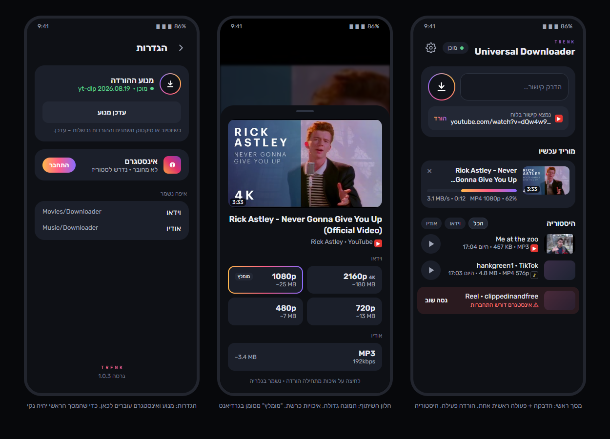

Universal Downloader
ראית סרטון שאהבת? שומרים אותו בשתי לחיצות.
מיוטיוב, Shorts, טיקטוק ואינסטגרם – בחינם ובלי פרסומות.
איך זה עובד?
שלושה צעדים, בלי להעתיק קישורים ובלי אתרים מפוקפקים.
-
1
רואים סרטון
ביוטיוב, Shorts, טיקטוק או אינסטגרם – ריל, פוסט או סרטון רגיל.
-
2
לוחצים על TRENK
בטלפון: שתף ← "הורדה עם TRENK".
במחשב: הכפתור העגול שמופיע ליד הסרטון. -
3
בוחרים איכות – וזהו
וידאו עד 4K, או MP3 לשירים ופודקאסטים. הקובץ מחכה לך בגלריה.
טיפ: כדי ש-TRENK תמיד יופיע ראשון כשלוחצים "שתף" – לחיצה ארוכה עליו בחלון השיתוף ← הצמד.
כמה זה עולה?
כלום. אין מנוי, אין פרסומות, אין הרשמה.
איפה הקבצים נשמרים?
בטלפון: סרטונים בגלריה (תיקיית Downloader), שירים במוזיקה. במחשב: בתיקייה Downloads\Videos.
זה בטוח?
ההורדה רצה אצלך במכשיר, בלי שרת באמצע. לא מבקשים ממך שום פרטים, והתחברות לאינסטגרם נדרשת רק לסטוריז.
למה הטלפון מזהיר כשמתקינים?
כי האפליקציה לא מגיעה מחנות Google Play. זו אזהרה רגילה לכל אפליקציה שמורידים מאתר – מאשרים פעם אחת וזהו.
הורדה נכשלה, מה עושים?
יוטיוב וטיקטוק משתנים מדי פעם. בטלפון: הגדרות ← עדכן מנוע. במחשב: האייקון ליד השעון ← עדכן. ואז "נסה שוב".
להורדה
📱 טלפון אנדרואיד
משתפים סרטון מהאפליקציה ובוחרים איכות
הורדת האפליקציה (APK, ~60MB)- פותחים את הקובץ שירד. אם הטלפון שואל – מאשרים התקנה מהדפדפן ("מקורות לא ידועים").
- ביוטיוב / טיקטוק / אינסטגרם: שתף ← הורדה עם TRENK ← בוחרים MP4 או MP3.
- הסרטונים נשמרים בגלריה (
Movies/Downloader), ה-MP3 במוזיקה.
לאנדרואיד 8 ומעלה, לטלפונים מהשנים האחרונות (arm64).
💻 מחשב Windows + כרום
כפתור הורדה ישירות בתוך יוטיוב, טיקטוק ואינסטגרם
הורדה למחשב (ZIP)- לוחצים על ה-ZIP שירד ← חלץ הכול.
- לחיצה כפולה על Install.bat. אם מופיע "Windows הגן על המחשב" – מידע נוסף ← הפעל בכל זאת. ההתקנה מורידה לבד את מה שצריך (כמה דקות).
- בסוף נפתח כרום: מפעילים מצב מפתח (למעלה מימין) ← טעינת פריט לא ארוז ←
Ctrl+V← בחירת תיקייה. הנתיב כבר מועתק.
Windows 10/11. הקבצים נשמרים ב-Downloads\Videos. המנוע עולה לבד עם המחשב (אייקון ליד השעון).
איך זה נראה בטלפון
